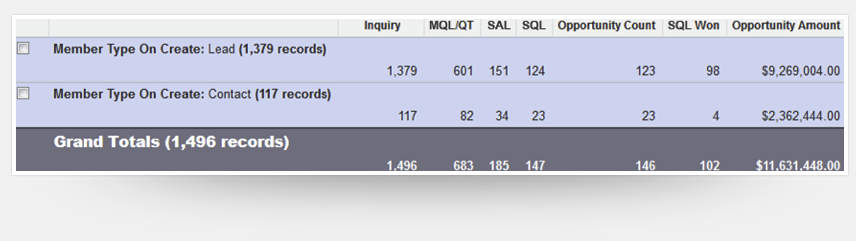

Blog Posts:
Best Practices in Designing a Lead Lifecycle in Salesforce
Turbo Charge Your Analytics in Salesforce
Optimize Your Marketing Mix in Salesforce
The traditional linear lead funnel is dead. Modern lifecycle marketing generates responses from brand new prospects, past prospects, and existing customers, and people often respond to more than one offer or campaign. Our Marketing Response Lifecycle Management module transforms your current leads and contacts process from linear to circular for Salesforce and ensures tracking the outcome of every response you generate.
See our other response management features: Marketing-to-Sales Handoff & Marketing and Sales Funnels
Empower sales to follow up with every qualified marketing response generated, regardless of whether that individual happens to be a Lead or Contact. Our unified marketing response workflow gives your sales team an easy way to follow up on every response and lets marketing track the outcome of every interaction.
Remember that perfectly linear lead lifecycle? It makes for a clean picture, but it’s not how marketing works in the real world. What about when someone doesn’t engage and falls out of your pipeline? What about the prospects who respond to multiple campaigns? Today’s marketing is full lifecycle marketing–where you engage with all actionable responses regardless of whether they happen to be a lead or a contact.
We provide lead management best-practices for Salesforce that will help you identify more opportunities from each campaign.
Ever wonder what happens when an existing contact responds to a campaign? Or how you could drive more revenue from your existing contact database? Full Circle Response Management helps you market to, and follow up with, your contact database–which can be some of your most qualified prospects. Our rich contact workflow makes it easy for sales to follow up on responses from existing contacts and lets marketing analyze results across both Leads and Contacts in a single report.
If you need a product that helps sales engage with both Leads and Contacts, track and measure follow up on both AND gives you great marketing performance metrics—Full Circle CRM is it.
Kyle Wulff, Sales Systems Manager
Box
Best Practices in Designing a Lead Lifecycle in Salesforce
Turbo Charge Your Analytics in Salesforce
Optimize Your Marketing Mix in Salesforce
Best Practices in Designing a Lead Lifecycle in Salesforce
Turbo Charge Your Analytics in Salesforce
Optimize Your Marketing Mix in Salesforce